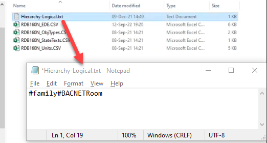
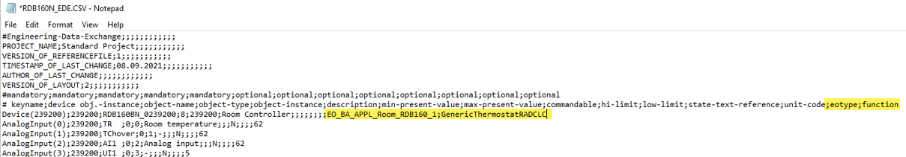

Importing Siemens room devices with an EDE file
To ensure that not all data points of a Siemens room device are imported and counted as license data points, the room device must be imported with an application model, such as Desigo room automation. There are certain import rules for Siemens BACnet room devices already available in the library. Use an existing Object model from the library which contains all the necessary data for Siemens room devices. When integrating a BACnet room device in Desigo CC the EDE import file must be adjusted.

The following workflow applies to Siemens room devices. For 3rd party devices you need to create an object model first.
Creating an object model for 3rd party room devices
Import Siemens room devices with an EDE file
- The library BA_Device_BACnet_RoomThermostat_HQ_1 is installed. This library includes the object model for Siemens room devices.
- Check if the Hierarchy-Logical.txt file exists. If not, create one in the folder of the EDE files.
- In the Hierarchy-Logical.txt file, enter #family#BACNETRoom.

- Open the EDE file.
- In keyname line, add eotype;function the end of the line.
- In Device line, add EO_BA_APPL_Room_RDB160_1; at the end of the line.
- The library provides a set of default functions that can be used for different devices. For room thermostats the function is called GenericThermostatRADCLC.
Add GenericThermostatRADCLC; right behind the EO type.
Note: This information must be added to each device in the EDE file. Mixed types of devices are allowed. - Import the modified EDE file in Desigo CC.
- The function [GenericThermostatRADCLC] and object model [GMS_BACNETRoom_EO_BA_APPL_Room_RDB160_1] are assigned to the data point.
- The generic graphic room template is assigned.